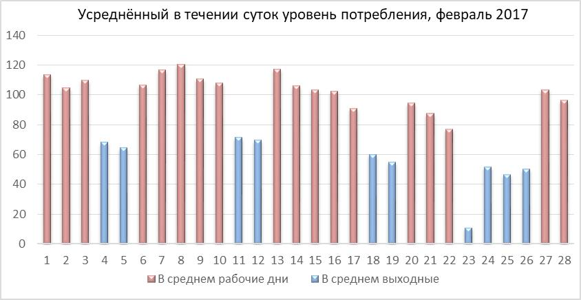

1. Особенности работы объединённой энергосистемы
Профиль мощности потребителя электроэнергии зависит от особенностей его работы и уровень этого потребления может весьма существенно изменятся в зависимости от дня недели или времени суток.
Пример изменения уровня потребления в течении месяца
Пример изменения уровня потребления в течении дня
Суммарное потребление объединённой энергосистемы имеет пики в определённые часы рабочих дней. По результатам анализа потребления АО «Системный оператор Единой энергетической системы» в конце календарного года публикует плановые часы пиковой нагрузки на следующий год (на сайте АО «СО ЕЭС» (пример публикация 2021г https://www.so-ups.ru/fileadmin/files/company/markets/2022/pik_chas2022.pdf)
Пример публикации на сайте АО «СО ЕЭС»
Особенностью работы электроэнергетики является нахождение в прямой зависимости производства и потребления электроэнергии в каждый конкретный момент времени. В связи с тем, что практически отсутствует возможность аккумулировать излишки производимой электроэнергии в промышленных масштабах в часы уменьшения потребления для компенсации потребления в часы его роста, часть генерирующих мощностей должна запускаться непосредственно в пик и отключаться после его прохождения. Данное обстоятельство делает производство электроэнергии не однородным по стоимости в течении времени. На передачу электроэнергии по распределительным сетям так же существенное влияние оказывают пики потребления, во первых, потери находятся в прямой зависимости от передающийся мощности, во вторых, пропускная способность сетей рассчитывается на пиковое потребление, а оно является лишь частью времени их эксплуатации.
То есть и по генерирующей мощности и по сетям получается ситуация, при которой затрачиваются средства на возможность производства и передачи 100% мощности, а фактически эксплуатация оборудования и сети в таком режиме это порядка 30-40% от общего времени. Данную неоднородность стоимости электроэнергии в конечном счёте производители и поставщики электроэнергии транслируют её потребителям.
2. Электроснабжение юридических лиц, факторы определяющие конечную стоимость электроэнергии
Функционирование розничных рынков электрической энергии определяется Постановлением Правительства РФ от 04.05.2012 N 442 "О функционировании розничных рынков электрической энергии, полном и (или) частичном ограничении режима потребления электрической энергии" (вместе с "Основными положениями функционирования розничных рынков электрической энергии", "Правилами полного и (или) частичного ограничения режима потребления электрической энергии") . Данный нормативный акт определяет правила деятельности гарантирующих поставщиков, их взаимодействие с потребителями электрической энергии, порядок определения, структуру стоимости электрической энергии, и иные вопросы взаимодействия гарантирующего поставщика и потребителей электроэнергии.
Первое что влияет на конечную стоимость электроэнергии это уровень питающего напряжения.
Четыре самых распространённых уровня питающего напряжения обозначены следующим образом:
- Уровень напряжения НН (0,4 кВ)
- Уровень напряжения СН2 (от 1 до 20 кВ)
- Уровень напряжения СН1 (35 кВ)
- Уровень напряжения ВН (110 кВ и выше)
Если рассматривать вопрос с уровнем питающего напряжения упрощённо, то чем выше уровень питающего напряжения, тем короче путь электроэнергии от производителя до потребителя и тем дешевле электроэнергия потребителю будет обходиться.
Второе это выбранная ценовая категория (Далее ЦК). Ценовых категорий шесть, условно их можно разделить на ценовые категории с применением почасового планирования и без применения планирования.
| Без применения планирования | С применением планирования |
|---|---|
| - Первая ценовая категория (далее 1ЦК) Учитывается потребление в целом за месяц |
|
| - Вторая ценовая категория (далее 2ЦК) Учитывается потребление по зонам суток |
|
| - Третья ценовая категория (далее 3ЦК) Почасовый учет объемов потребления, оплата услуг по передаче по одноставочному тарифу |
- Пятая ценовая категория (далее 5ЦК) Почасовый учет объемов потребления, оплата услуг по передаче по одноставочному тарифу |
| - Четвёртая ценовая категория (далее 4ЦК) Почасовый учет объемов потребления, оплата услуг по передаче по двуставочному тарифу |
- Шестая ценовая категория (далее 6ЦК) Почасовый учет объемов потребления, оплата услуг по передаче по двуставочному тарифу |
Если уровень питающего напряжения чисто физический параметр и повлиять на него без изменения конструктива невозможно (изменение точки подключения, реконструкция питающей трансформаторной подстанции и т.п.), то выбор ЦК позволяет влиять на конечную стоимость электроэнергии по результатам оценки особенности профиля мощности.
3. Краткое описание ценовых категорий
I. Первая ценовая категория (далее 1ЦК, для объемов покупки электрической энергии (мощности), учет которых осуществляется в целом за расчетный период
1ЦК для расчёта платежа требуются лишь два параметра, объём потребления и стоимость 1 кВт*ч. Величина платежа за потреблённую электроэнергию получается прямым перемножением объёма потребления на стоимость 1 кВт*ч (стоимость электроэнергии публикуется в разделе «раскрытие информации» на сайте энергоснабжающей организации).
Пример публикации на сайте ГП
* Экономическое обоснование целесообразности выбора данной ЦК может показать только расчёт, но по опыту анализа профилей мощности могу предварительно рекомендовать данную ЦК только потребителям с подавляющим преобладанием потребления в плановые часы пиковой нагрузки над потреблением за исключением этих часов.
II. Вторая ценовая категория (далее 2ЦК, для объемов покупки электрической энергии (мощности), учет которых осуществляется по зонам суток расчетного периода)
2ЦК для расчёта платежа требуются, объёмы потребления и стоимость 1 кВт*ч. для каждой зоны суток. Величина платежа за потреблённую электроэнергию является суммой произведений объёма потребления на стоимость 1 кВт*ч для каждой зоны суток (стоимость электроэнергии для каждой зоны суток публикуется в разделе «раскрытие информации» на сайте энергоснабжающей организации).
Пример публикации на сайте ГП
* Экономическое обоснование целесообразности выбора данной ЦК может показать только расчёт, но по опыту анализа профилей мощности данная ценовая категория ни разу не была выбрана как оптимальная.
III. Третья ценовая категория (далее 3ЦК, для объемов покупки электрической энергии (мощности), в отношении которых за расчетный период осуществляется почасовой учет, но не осуществляется почасовое планирование, а стоимость услуг по передаче электрической энергии определяется по тарифу на услуги по передаче электрической энергии в одноставочном выражении).
Платёж за потреблённую электроэнергию состоит из двух частей Сээ. + Смощ.
Где:
Сээ. – Оплата потребления по каждому часу. Величина ставки в руб./МВт*ч (без НДС) для фактических почасовых объемов покупки электрической энергии публикуется на официальном сайте гарантирующего
поставщика в разделе «Раскрытие информации». Значение определяется как сумма всех произведений стоимости электроэнергии для каждого часа на объём потребления для каждого часа (с приведением в
случае необходимости к МВт).
Смощ. – Оплата мощности. Величина ставки за мощность в руб./МВт (без НДС) публикуется на официальном сайте гарантирующего поставщика в разделе «Раскрытие информации». На сайте ОАО "АТС"
(https://www.atsenergo.ru/results/market/calcfacthour) публикуются отчётные часы для расчёта потребления Рпик сети (за Рпик сети принимается среднее арифметическое значение, т.е. сумма объема
выработки за все опубликованные часы делится на кол-во рабочих дней в расчетном периоде). Значение Смощ. получается прямым перемножением Рпик сети на величину ставки (с приведением в случае необходимости к МВт).
Пример публикации ставки
Ставка за мощность, приобретаемую потребителем (покупателем), предельного уровня нерегулируемых цен, рублей/МВт в месяц без НДС 843 632,43
Пример величины потребления для каждого часа
Пример расчёта стоимости потребления по каждому часу
И в соответствии с данным примером получаем:
Платёж 3ЦК = Сээ. + Смощ. = 2 241 592,92 + 793 526,29 = 3 035 119,21 руб. (без НДС).
Где:
Смощ. = 940,60667 / 1000 * 843 632,43 = 793 526,29 руб. (без НДС)
Стоимость 1 кВт*ч = 3 035 119,21 / 548 661 = 5,53187 руб. (без НДС).
Пример формы публикации отчётных часов
Пример значений мощности и расчёта Рпик
Рассмотрим стоимость 1 кВт*ч относительно часов пиковой нагрузки сети.
В рассматриваемом примере у нас:
Получается, что одна из составляющих конечной стоимости электроэнергии (Сээ.) рассчитывается по всем 744 часам потребления, а вторая (Смощ.) только по часам пиковой нагрузки (входящим в 210 плановых часов пиковой нагрузки). Получается, что в случае возможности перераспределить часть потребления с плановых часов пиковой нагрузки можно получить снижение конечной стоимости электроэнергии, без уменьшения объёма её потребления.
Т.Е. если рассматривать укрупнённо получается стоимость 1 кВт*ч за исключением плановых часов пиковой нагрузки равна средней стоимости Сээ. = 2 241 592,92 / 548 661 = 4,08557 руб. (без НДС), а в плановые часы пиковой нагрузки к ней прибавляется оплата мощности 4,08557 + (793 526,29 / 197 419) = 8,10507 руб. (без НДС).
Проверка 4,08557 * 351 242 + 8,10507 * 197 419 = 3 035 118,59 (расхождение составляет менее 1 рубля, такой упрощённо/укрупнённый подход даёт общее понимание неоднородности стоимости электроэнергии в зависимости от времени потребления, при этом средняя стоимость электроэнергии по-прежнему равна 3 035 118,59 / 548 661 = 5,53187 руб. (без НДС)).
* Экономическое обоснование целесообразности выбора данной ЦК может показать только расчёт, но по опыту анализа профилей мощности могу предварительно рекомендовать данную ЦК потребителям с преобладанием потребления в плановые часы пиковой нагрузки над потреблением за исключением этих часов.
IV. Четвертая ценовая категория (для объемов покупки электрической энергии (мощности), в отношении которых за расчетный период осуществляется почасовой учет, но не осуществляется почасовое планирование, а стоимость услуг по передаче электрической энергии определяется по тарифу на услуги по передаче электрической энергии в двухставочном выражении).
Платёж за потреблённую электроэнергию состоит из трёх частей Сээ. + Смощ. + Ссеть
Где:
Сээ. – Оплата потребления по каждому часу. Величина ставки в руб./МВт*ч (без НДС) для фактических почасовых объемов покупки электрической энергии публикуется на официальном сайте гарантирующего поставщика в разделе «Раскрытие информации». Значение определяется как сумма всех
произведений стоимости электроэнергии для каждого часа на объём потребления для каждого часа (с приведением в случае необходимости к МВт).
Смощ. – Оплата мощности. Величина ставки за мощность в руб./МВт (без НДС) публикуется на официальном сайте гарантирующего поставщика в разделе «Раскрытие информации». На сайте ОАО "АТС" (https://www.atsenergo.ru/results/market/calcfacthour)
публикуются отчётные часы для расчёта
потребления Рпик сети (за Рпик сети принимается среднее арифметическое значение, т.е. сумма объема выработки за все опубликованные часы делится на кол-во рабочих дней в расчетном периоде). Значение Смощ. получается прямым перемножением Рпик сети на величину ставки (с приведением
в случае необходимости к МВт).
Ссеть – Оплата передачи по сети. Ставка тарифа на услуги по передаче электрической энергии за содержание электрических сетей в руб./МВт (без НДС) публикуется на официальном сайте гарантирующего поставщика в разделе «Раскрытие информации». Плановые часы пиковой нагрузки публикуются
АО «СО ЕЭС»: https://www.so-ups.ru/fileadmin/files/company/markets/2022/pik_chas2022.pdf Для каждого рабочего дня (в плановые часы пиковой нагрузки) выбирается максимальное значение и высчитывается средне арифметическое
за месяц (Рсеть - сумма максимальных значений в плановые часы
пиковой нагрузки делится на количество рабочих дней). Значение получается прямым перемножением Рсеть на величину ставки за транзит согласно уровню напряжения (с приведением в случае необходимости к МВт).
Пример публикации стоимости для каждого часа
Ставка за мощность, приобретаемую потребителем (покупателем), предельного уровня нерегулируемых цен, рублей/МВт в месяц без НДС 843 632,43
Пример величины потребления для каждого часа
Пример расчёта стоимости потребления по каждому часу

Пример публикации на сайте ГП
Пример формы публикации отчётных часов
Пример значений мощности и расчёта Рпик и Рсеть

И в соответствии с данным примером получаем:
Платёж 4ЦК = Сээ. + Смощ. + Ссеть. = 1 012 834,14 + 793 526,29 + 1 366 941,29 = 3 173 301,72 руб. (без НДС).
Где:
Смощ. = 940,60667 / 1000 * 843 632,43 = 793 526,29 руб. (без НДС)
Ссеть. = 1042,48 / 1000 * 1 311 239,82 = 1 366 941,29 руб. (без НДС)
Стоимость 1 кВт*ч = 3 173 301,72 / 548 661 = 5,78372 руб. (без НДС).
Рассмотрим стоимость 1 кВт*ч относительно часов пиковой нагрузки сети.
В рассматриваемом примере у нас:
Получается, что одна из составляющих конечной стоимости электроэнергии (Сээ.) рассчитывается по всем 744 часам потребления, а вторая (Смощ.) и третья (Ссеть.) только по часам пиковой нагрузки и плановым часам пиковой нагрузки. Получается, что в случае возможности перераспределить часть потребления с плановых часов пиковой нагрузки можно получить снижение конечной стоимости электроэнергии, без уменьшения объёма её потребления.
Т.Е. если рассматривать укрупнённо получается стоимость 1 кВт*ч за исключением плановых часов пиковой нагрузки равна средней стоимости Сээ. = 1 012 834,14 / 548 661 = 1,84601 руб. (без НДС), а в плановые часы пиковой нагрузки к ней прибавляется оплата за мощность и сеть.
1,84601 + ((793 526,29 + 1 366 941,29) / 197 419) = 12,78957 руб. (без НДС).
Проверка 1,84601 * 351 242 + 12,78957 * 197 419 = 3 173 301,27 (расхождение составляет менее 1 рубля, такой упрощённо/укрупнённый подход даёт общее понимание неоднородности стоимости электроэнергии в зависимости от времени потребления, при этом средняя стоимость электроэнергии по-прежнему равна 3 173 301,27 / 548 661 = 5,78372 руб. (без НДС)).
* Экономическое обоснование целесообразности выбора данной ЦК может показать только расчёт, но по опыту анализа профилей мощности могу предварительно рекомендовать данную ЦК потребителям с ровным уровнем потребления и тем более с преобладающим потреблением в периоды за исключением плановых часов пиковой нагрузки.
V. Пятая ценовая категория (для объемов покупки электрической энергии (мощности), в отношении которых за расчетный период осуществляются почасовое планирование и учет, а стоимость услуг по передаче электрической энергии определяется по тарифу на услуги по передаче электрической энергии в одноставочном выражении)
5ЦК расчёт аналогичен 3ЦК, отличие в том, что требуется планирование.
* Дополнительный экономический эффект по сравнению с 3ЦК возможен при абсолютной предсказуемости уровня потребления, при расхождении планируемого и фактического потребления неизбежна переплата за электроснабжение относительно 3ЦК.
VI. Шестая ценовая категория (для объемов покупки электрической энергии (мощности), в отношении которых за расчетный период осуществляются почасовое планирование и учет, а стоимость услуг по передаче электрической энергии определяется по тарифу на услуги по передаче электрической энергии в двухставочном выражении)
6ЦК расчёт аналогичен 4ЦК, отличие в том, что требуется планирование.
* Дополнительный экономический эффект по сравнению с 4ЦК возможен при абсолютной предсказуемости уровня потребления, при расхождении планируемого и фактического потребления неизбежна переплата за электроснабжение относительно 4ЦК.
По итогу можно сказать, что 4ЦК и 6ЦК имеют ярко выраженную структуру стоимости и зависимость этой стоимости от времени потребления относительно плановых часов пиковой нагрузки сети. Для 3ЦК и 5ЦК получается плата за транзит по сети распределена условно равномерно в значении Сээ. (прибавлением Сээ. 3ЦК относительно Сээ. 4ЦК), зависимость стоимости электроэнергии относительно времени потребления сохраняется, но разница стоимости становится меньше. Для 1ЦК составляющие Смощ. и Ссеть. включены в стоимость электроэнергии и зависимость стоимости электроэнергии от времени потребления отсутствует. Для 2ЦК сохраняется зависимость стоимости от времени потребления, составляющие Смощ. и Ссеть. включены в стоимость дневной (пиковой и полупиковой) зоны суток.
Для анализа экономического эффекта от работы для разных ценовых категорий требуется оценка профиля мощности за календарный год, т.к. к примеру 3 месяца из года будет более выгодна 4ЦК, а остальное время 3ЦК и только оценка в целом по году позволит избежать не верных выводов.
4. Смена ценовой категории
Процедура смены ценовой категории носит уведомительный характер, достаточно не позднее чем за 10 рабочих дней до начала месяца известить гарантирующего поставщика о своём желании перейти на другую ЦК. Но данное условие справедливо только при смене ЦК без изменения действующего тарифа оплаты услуг по передачи электроэнергии по сети (смена возможна только в пределах группы 1ЦК - 2ЦК - 3 ЦК - 5ЦК или группы 4ЦК - 6ЦК). Смена ЦК с изменением действующего тарифа по передачи электроэнергии по сети возможна только в течении января (не позднее месяца с опубликования единых (котловых) тарифов на год, публикация которых происходит в конце декабря).
Существует ограничение для выбора ЦК для потребителей в зависимости от величины потребляемой мощности. Для потребителей с максимальной мощностью менее 670 кВт возможна работа по любой из 6ЦК (с 1ЦК по 6ЦК), если же потребление выше 670 кВт, то исключается возможность выбора 1 и 2ЦК и работа возможна по ЦК с 3-ей по 6-ю.
5. Принятые сокращения и используемые термины
ГП – гарантирующий поставщик
ЦК – ценовая категория
Профиль мощности - это расход электроэнергии предприятием за каждый час суток. Также профиль электрической мощности часто называют почасовками